Versão de acabamento. Os próprios prints das notas da 2.5.0 mostravam defeitos visuais: o pódio deixava a mesa vazar por trás e, deitado, empilhava tudo; a linha do tempo cortava o rótulo do fim; o microfone engolia o nome de quem estava no canto; as barras de comandante entravam embaixo do número da vida. Tudo isso foi corrigido, com antes e depois abaixo.
A tela de vitória tinha fundo translúcido demais: o número do card, a barra "Passar a vez" e as tiras dos eliminados apareciam por trás do troféu e do nome do campeão. Deitado era pior: troféu cortado no topo, a faixa "É CAMPEÃO" em cima do título, a linha do tempo por cima das colocações e as bolinhas de baixo fora da tela.
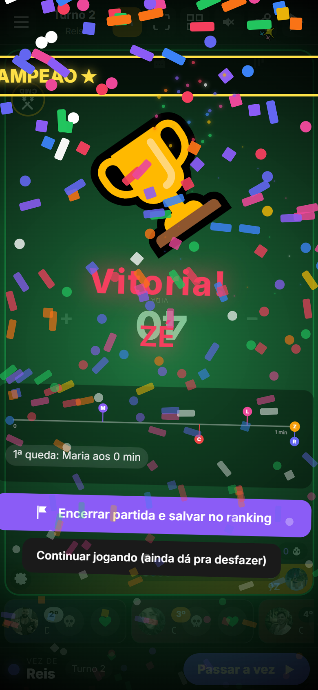
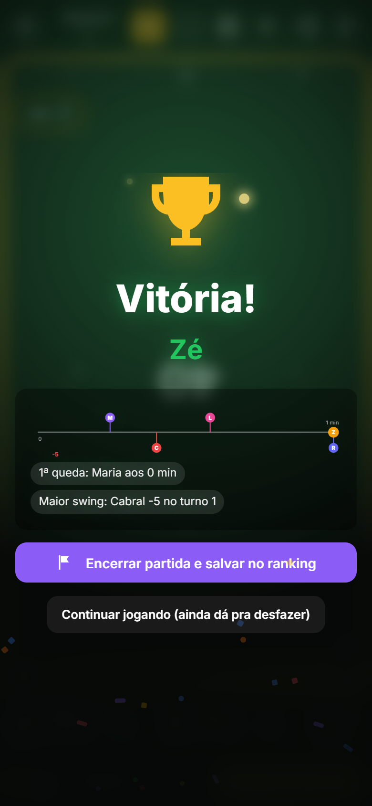
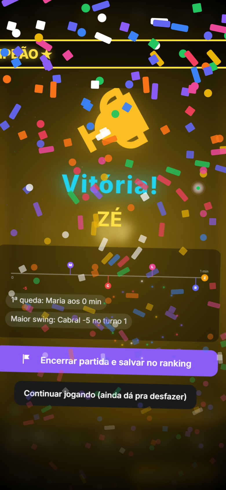
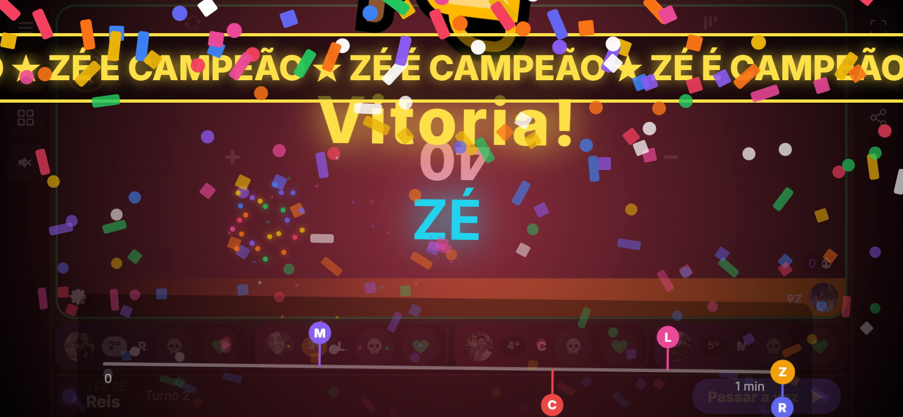
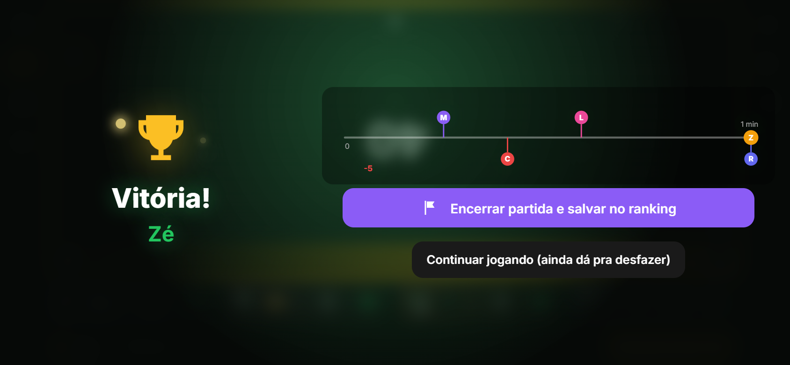
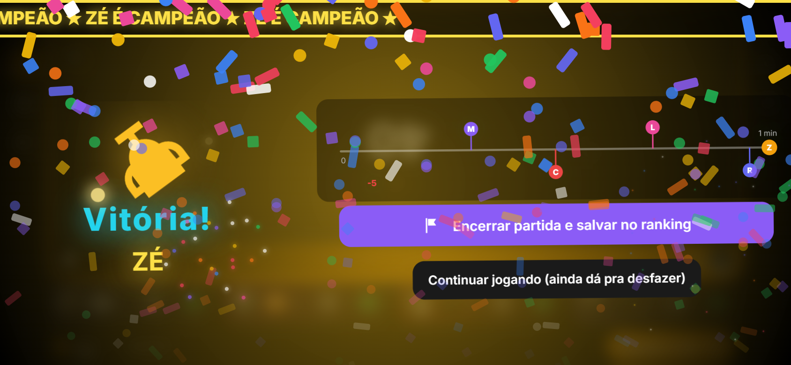
O rótulo da duração ("1 min", "2h05") ficava embaixo da bolinha do vencedor e as bolinhas de baixo encostavam na borda. Agora a régua tem mais folga em cima e embaixo, e o rótulo do fim escolhe sozinho onde cabe: embaixo do eixo, em cima dele ou no topo, conforme as quedas que estiverem perto do fim.
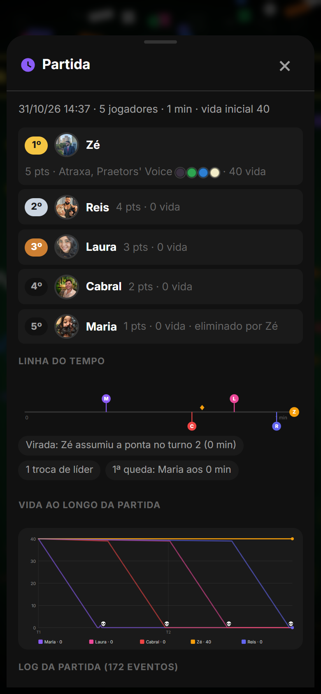
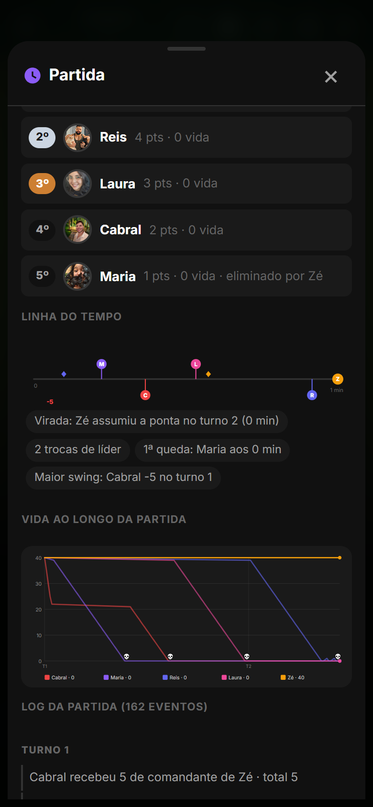
Nos cards estreitos (três colunas no celular em pé) o recuo que afastava o conteúdo do recorte do microfone deixava zero pixel pro nome: o Zé e o Cabral ficavam só com foto e engrenagem. Agora, nesses cards, o recuo é menor, a foto some só no lado do recorte e o nome fica. No rodapé, some o botão do meio em vez de espremer os três. O microfone também ficou menor em mesas de 5 ou mais (48 px), e o buraco nos cards acompanha o tamanho real do botão.
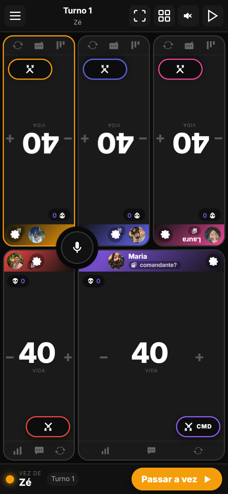
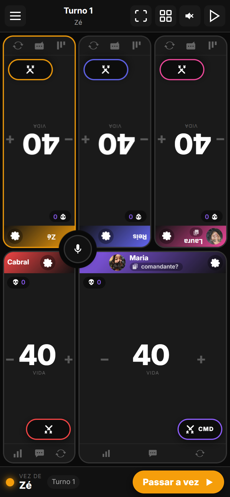
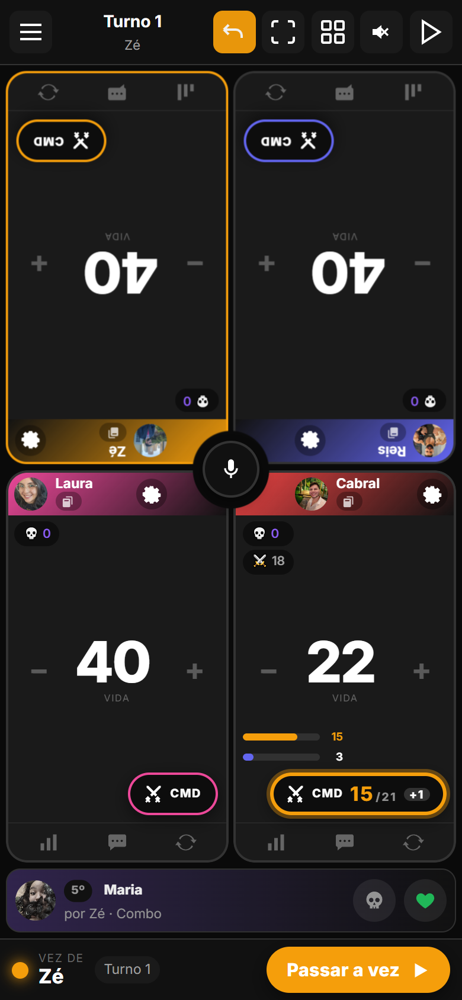
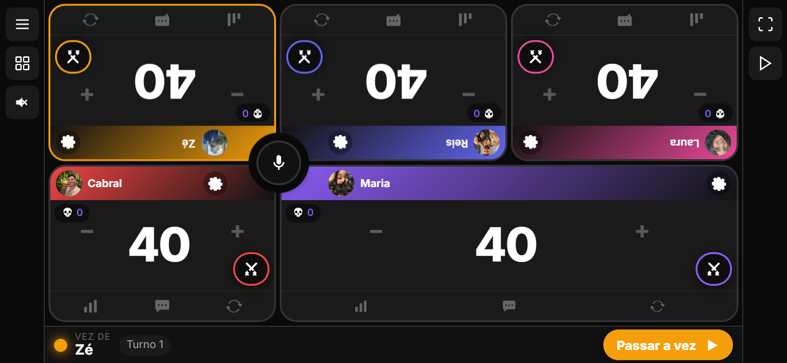
Com dano marcado, o card acumulava três coisas no mesmo canto: as barras por atacante, o selo "em risco" e a pílula CMD. Deitado, as barras entravam embaixo do número da vida e o selo cobria o botão de menos.
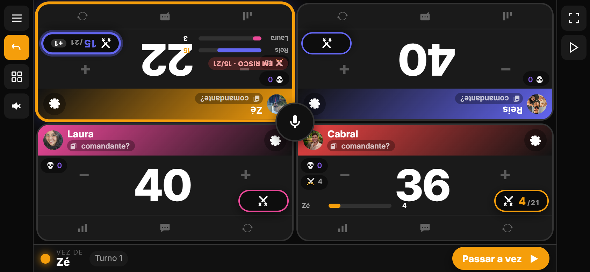
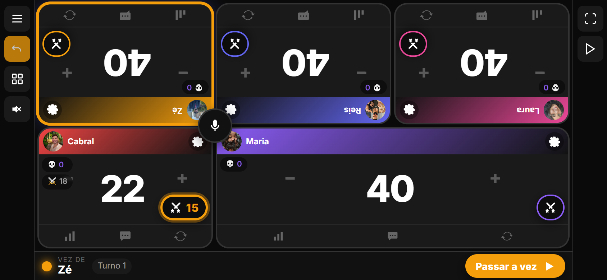
Deitado, a tira escondia "por Zé · Combo" por falta de altura. Agora quem matou e como aparece na mesma linha do nome.
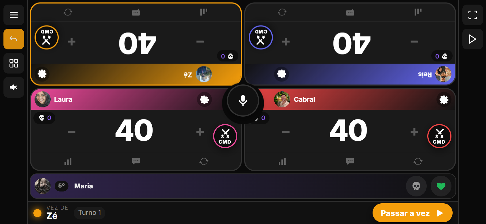
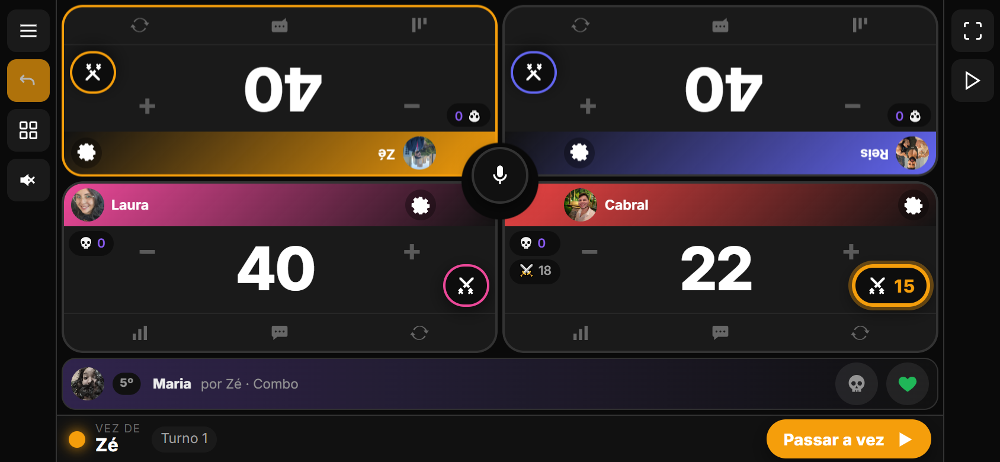
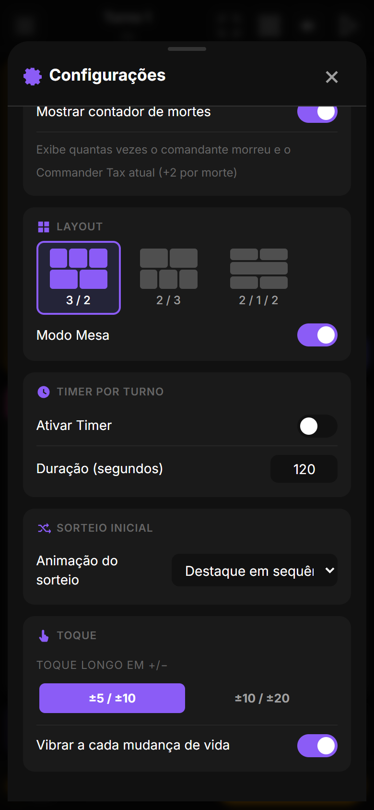
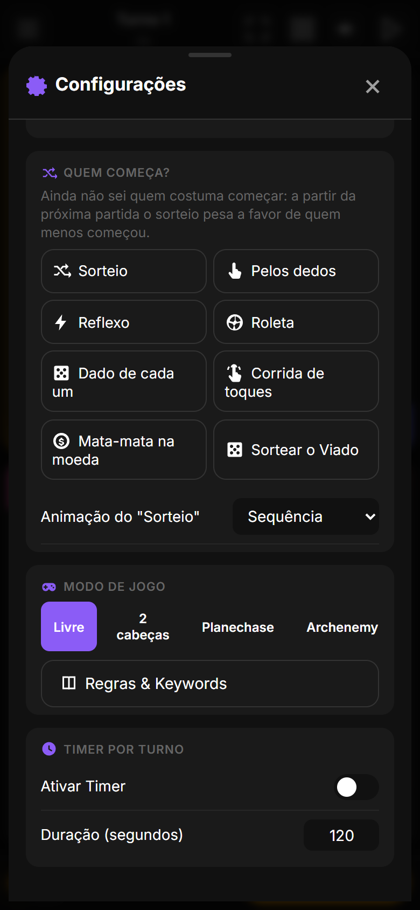
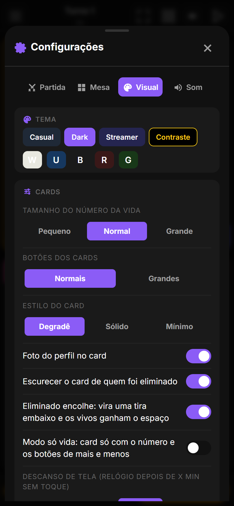
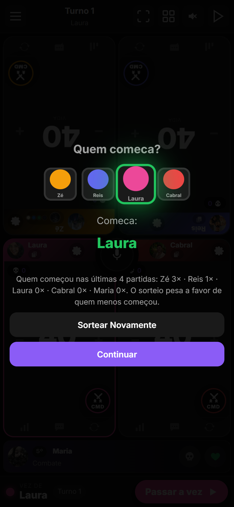
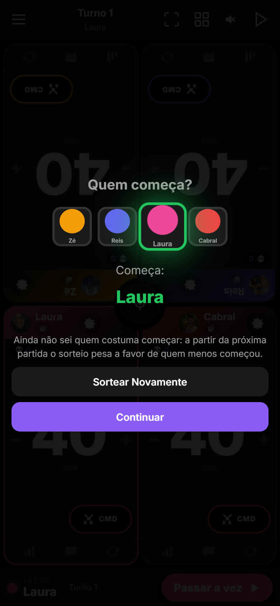
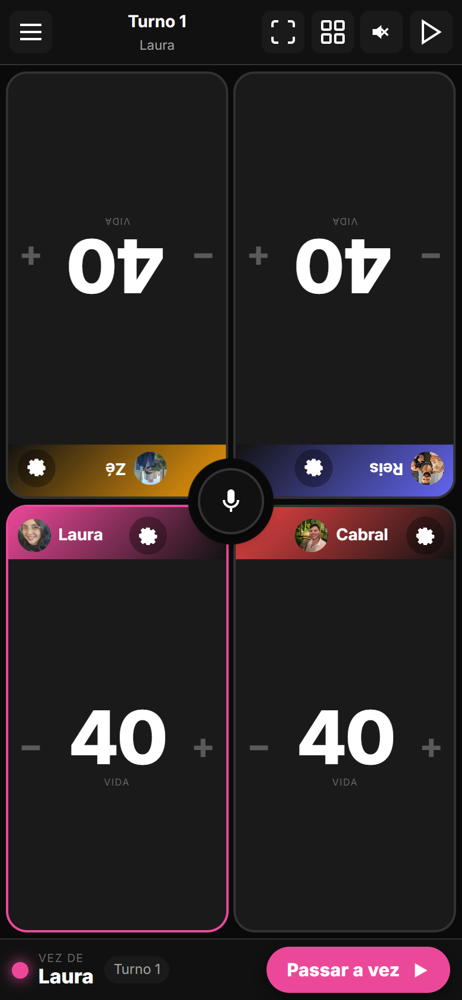
| Onde | O que mudou |
|---|---|
| Pódio | HTML do overlay reorganizado em .winner-hero + linha do tempo + .winner-actions; grade de duas colunas em paisagem; fundo 0,985 de opacidade com desfoque; troféu #ic-trophy. |
| Linha do tempo | matchTimelineHtml: altura 112, eixo em 60, rótulo da duração com três posições candidatas conforme as quedas perto do fim. |
| Microfone | syncFabCutRadius lê o tamanho real do botão; regras de data-notch dentro de @container (max-width: 150px). |
| Card | .cmd-risk oculto; .cmd-bars acima da pílula; em paisagem as barras somem e, com 5+, a pílula fica compacta. |
| Testes | QA automatizado novo (qa12) com 27 verificações cobrindo cada defeito desta nota, em pé e deitado; suítes anteriores sem regressão; zero erros de JS. |
Como atualizar. No Android, o app avisa ao abrir e instala com um toque (ou Configurações › Atualização). No navegador basta recarregar; o site já está na 2.5.1.